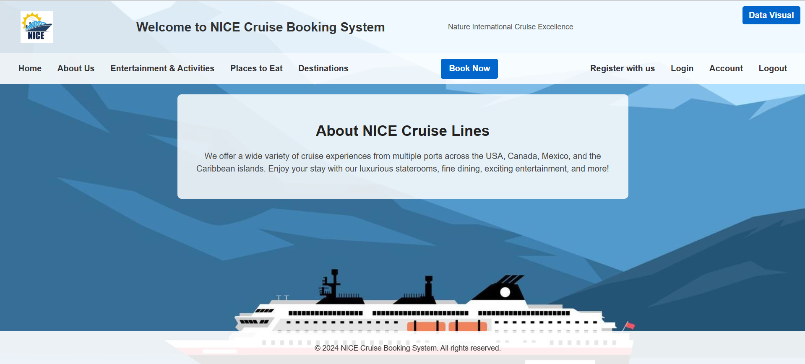

NYC Turnstile Data Analysis
Tools:Apache Spark, PySpark, Kafka, SparkML, MongoDB, Python, SQL, Pandas, Seaborn, Matplotlib
- Analyzed over 13 million records of NYC MTA Subway turnstile data to uncover ridership trends and station-level traffic patterns using PySpark and Pandas.
- Built an end-to-end real-time data pipeline using Apache Kafka, PySpark Structured Streaming, and MongoDB for live prediction of subway foot traffic.
- Developed and deployed machine learning models (Random Forest, Decision Tree, Linear Regression) using SparkML to predict hourly passenger entries/exits with 93.36% accuracy.
- Engineered custom Kafka producer scripts to simulate realistic subway traffic, publishing streaming data every 3–5 seconds.
- Designed insightful visualizations including heatmaps, boxplots, and bar charts to reveal peak hours, seasonal usage, and holiday traffic dips using Seaborn and Matplotlib.
- Implemented delta-based transformation logic to convert cumulative turnstile counts into accurate interval-based foot traffic data.
- Managed structured and semi-structured data using MongoDB to enable flexible querying and integration with Spark SQL.
View on GitHub ↗

NICE Cruise Case Study
Tools: MySQL, PHP, HTML, CSS, JS, XAMPP
- Designed and Implemented robust relational database schema to manage cruise operations.
- Developed a RESTful web application using PHP, MySQL, HTML, CSS and JS.
- Enhanced security by implementing SQL injection prevention, password hashing, XSS protection and secure session handling.
- Integrated CRUD operations for user and admin interactions supporting booking, updating and cancelling functionalities.
- Created SQL queries providing insights into passenger behavior, trip occupancy and revenue trends.
- Built a data visualization module to analyze passenger statistics through interactive graphs and charts.